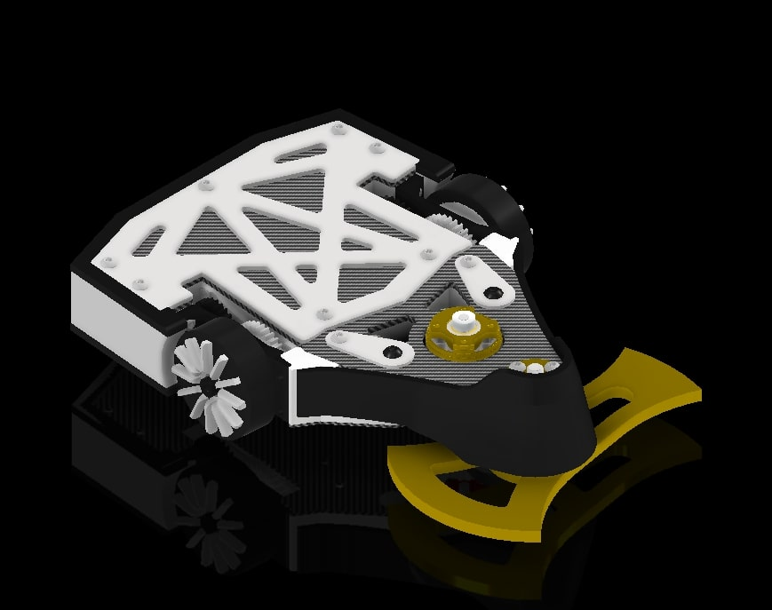

Knights Combat Robotics
Founding UCF Combat Robotics Organization

Overview
Led the design and development of a competition-ready combat robot as part of founding the university's first combat robotics club. The project involved comprehensive CAD modeling, systems engineering analysis, and strategic weapon selection based on competitive research.
Technical Details
Weight Class: 3 lbs (Beetleweight)
Weapon Type: Horizontal spinner/Undercutter design
Drive System: 2-Wheel Drive
Armor: AR500 steel back wedge, UHMW polyethylene sides, Carbon Fiber top plate
Design Process
Analyzed 30+ competitive matches to identify successful design patterns and common failure modes. Used this data to inform weapon selection, armor placement, and overall robot geometry. Applied iterative design methodology to optimize weight distribution and structural integrity.
Key Achievements
- Completed full CAD assembly in Autodesk Inventor with 30+ components
- Conducted FEA analysis on critical load-bearing structures
- Selected optimal motor and battery configuration for weight/power ratio
- Designed weapon system capable of 15,000+ RPM tip speed
Technologies Used
Challenges & Solutions
Challenge: Balancing weapon energy with robot weight constraints.
Solution: Conducted trade studies comparing different motor configurations and used lightweight UHMW for non-critical armor sections.

Future Development
Currently securing club approval and funding. Next steps include manufacturing components, assembling prototype, and competing in regional competitions. Planning iterative improvements based on testing results.